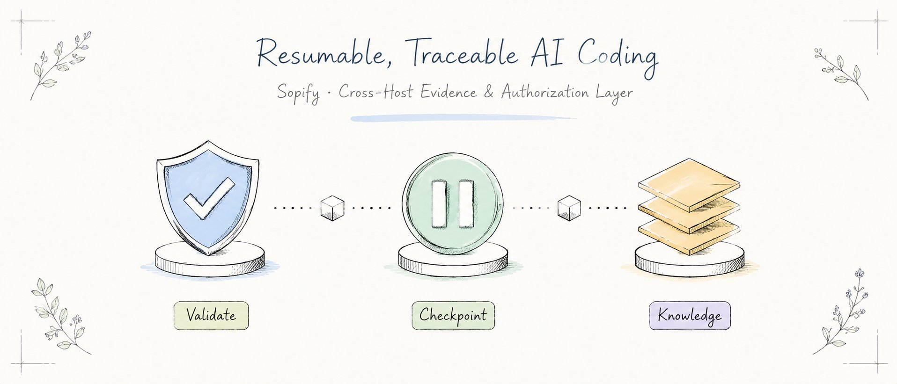
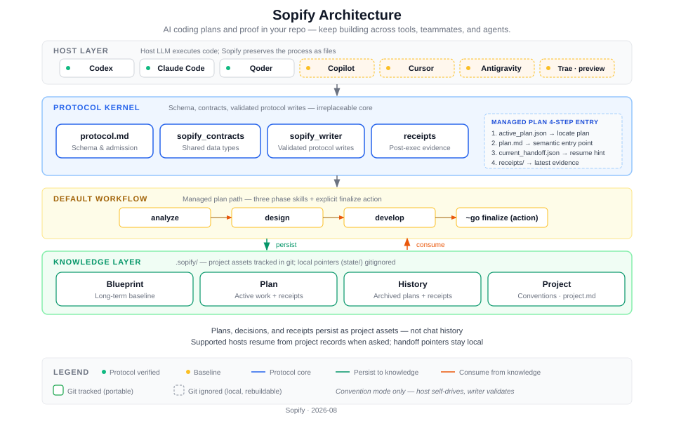

Premature coding
When a requirement or key choice is unresolved, Sopify pauses instead of guessing.
Sopify · AI coding
Resume work across tools, teammates, and agents. Plans, decisions and verification
evidence are kept as ordinary files under .sopify/ and versioned in Git, so the next session
resumes from the record instead of from memory.
Installs into the AI coding tools you already use. Questions and small fixes are handled directly; plans start only when needed.

What it prevents
Sopify keeps fast AI coding from outrunning the facts, the decision, or the project history.
When a requirement or key choice is unresolved, Sopify pauses instead of guessing.
Plans and evidence are versioned in Git, so a new session, tool, machine, or teammate can resume from the same record.
Requirements, tradeoffs, reviews, and verification evidence remain inspectable project assets.
How it works
Simple requests stay simple. Work that needs a plan moves through four explicit stages and pauses when you need to decide.
Clarify the outcome, evidence, and unresolved boundaries.
Choose the smallest sufficient path and make decisions visible.
Implement the approved tasks and attach focused verification.
Close the plan only when delivery evidence is ready.

Product form
Sopify is a set of rules and Skills that installs into the AI coding tool you already use. It preserves
plans, decisions, and verification evidence as project files in .sopify/.
~go runs or resumes the current plan from those files; routine questions and small fixes are
answered directly without resuming a plan. A local handoff pointer provides a same-workspace resume hint.

Open the technical architecture →Install
The installer checks for Python 3.11 or newer before downloading. You can inspect the script before running it.
curl -fsSL https://github.com/evidentloop/sopify/releases/latest/download/install.sh | bash -s -- --target codex:en-USFAQ
Sopify is a set of rules and Skills that installs into the AI coding tools you already use.
No. Ordinary questions and small fixes are handled directly. Sopify resumes an unfinished plan only when you ask to continue or use the current host's managed entry.
Plans, decisions, and verification receipts can be tracked under .sopify/. The active-plan and handoff pointers stay gitignored by design.
No. Codex, Claude Code and Qoder are verified: the managed workflow has been run in a real session, not only installed. Copilot, Cursor, Antigravity and Trae are baseline: the installation is verified, and real-session evidence varies by host — see each host doc; Antigravity has been tested in real sessions. One Cursor install covers the IDE and local CLI; the CLI selects the plan, development, resume, and closeout entry when the request calls for it. Cloud Agent remains out of scope.
No. Sopify works on its own. EvidentLoop is an optional companion for auditable reviews of local Git changes.